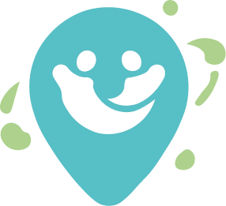

Farkındalık
İzmir'de Erişilebilirlik Bir Lütuf Değil, Herkes İçin Temel Bir Haktır
Şehir hayatında bağımsız hareket edebilmenin önemi ve karşılaşılan görünmez engeller üzerine detaylı bir inceleme.
Yazıyı Oku
İzmir metrosundaki asansör ve yürüyen merdiven arızalarını anlık olarak haritadan takip edin, kendi bildirimlerinizi yaparak topluluğa katkı sağlayın.
Şehir hayatında bağımsız hareket edebilmenin önemi ve karşılaşılan görünmez engeller üzerine detaylı bir inceleme.
Yazıyı OkuDijital dünyadaki erişilebilirlik standartlarının (WCAG) fiziksel kentsel özgürlüğe nasıl dönüştüğünü teknik mutfağımıza girerek inceliyoruz.
Yazıyı OkuMert için Bornova'dan çıkıp Konak'taki kampüsüne gitmek, bir ulaşım rutini değil, yüksek riskli bir strateji oyunudur.
Yazıyı Oku